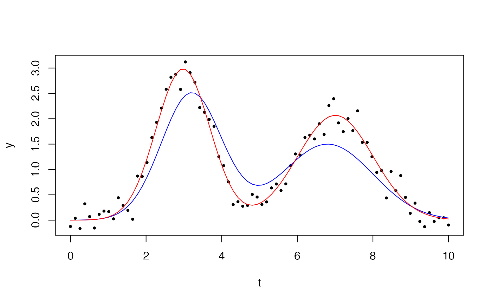

Nonlinear Least Squares Fit with Sparse Levenberg-Marquardt Algorithm
Source:R/sparseLM.R
sparselm.RdNonlinear Least Squares Fit with Sparse Levenberg-Marquardt Algorithm
Usage
sparselm(
p,
x,
func,
fjac,
Jnnz,
nconvars = 0,
itmax = 100,
opts = sparselm.opts(),
dif = FALSE,
...
)Arguments
- p
initial parameter estimates length nvars
- x
measurement vector length nobs;
length(x)must be at leastlength(p)- func
functional relation describing measurements given a parameter vector p, returning vector length nobs
- fjac
function to supply the nonzero pattern of the sparse Jacobian of func and optionally evaluate it at p, returning nobs by nvars dgCMatrix
- Jnnz
number of nonzeros for the Jacobian J
- nconvars
number of constrained variables (currently reserved for future use)
- itmax
maximum number of iterations
- opts
minim. options
mu, epsilon1, epsilon2, epsilon3, delta, spsolver- dif
logical indicating whether to use finite differences
- ...
additional arguments passed to func and fjac
Examples
set.seed(1)
t <- seq(0, 10, length.out = 80)
g <- function(A, mu, s, x) A * exp(-0.5 * ((x - mu) / s)^2)
y <- g(3, 3, 0.7, t) + g(2, 7, 1.0, t) + rnorm(length(t), sd = 0.2)
p0 <- c(2.5, 3.2, 0.8, 1.5, 6.8, 1.2)
y_obs <- y
mask1 <- abs(t - p0[2]) <= 3 * p0[3]
mask2 <- abs(t - p0[5]) <= 3 * p0[6]
mask <- mask1 | mask2
y[!mask] <- 0
idx1 <- which(mask1); idx2 <- which(mask2)
i <- c(idx1, idx1, idx1, idx2, idx2, idx2)
j <- c(rep(1, length(idx1)), rep(2, length(idx1)), rep(3, length(idx1)),
rep(4, length(idx2)), rep(5, length(idx2)), rep(6, length(idx2)))
Jpat <- sparseMatrix(i = i, j = j, x = 1, dims = c(length(t), 6))
func <- function(p, t, ...) {
f <- g(p[1], p[2], p[3], t) + g(p[4], p[5], p[6], t)
f[!mask] <- 0
f
}
fjac <- function(p, t, ...) {
A1 <- p[1]; mu1 <- p[2]; s1 <- p[3]
A2 <- p[4]; mu2 <- p[5]; s2 <- p[6]
e1 <- exp(-0.5 * ((t[idx1] - mu1) / s1)^2)
e2 <- exp(-0.5 * ((t[idx2] - mu2) / s2)^2)
J <- Jpat
J@x <- c(e1, A1 * e1 * ((t[idx1] - mu1) / s1^2),
A1 * e1 * ((t[idx1] - mu1)^2 / s1^3),
e2, A2 * e2 * ((t[idx2] - mu2) / s2^2),
A2 * e2 * ((t[idx2] - mu2)^2 / s2^3))
J
}
fit <- sparselm(p0, y, func, fjac,
Jnnz = length(i),
nconvars = 0, t = t)
Jpat
#> 80 x 6 sparse Matrix of class "dgCMatrix"
#>
#> [1,] . . . . . .
#> [2,] . . . . . .
#> [3,] . . . . . .
#> [4,] . . . . . .
#> [5,] . . . . . .
#> [6,] . . . . . .
#> [7,] . . . . . .
#> [8,] 1 1 1 . . .
#> [9,] 1 1 1 . . .
#> [10,] 1 1 1 . . .
#> [11,] 1 1 1 . . .
#> [12,] 1 1 1 . . .
#> [13,] 1 1 1 . . .
#> [14,] 1 1 1 . . .
#> [15,] 1 1 1 . . .
#> [16,] 1 1 1 . . .
#> [17,] 1 1 1 . . .
#> [18,] 1 1 1 . . .
#> [19,] 1 1 1 . . .
#> [20,] 1 1 1 . . .
#> [21,] 1 1 1 . . .
#> [22,] 1 1 1 . . .
#> [23,] 1 1 1 . . .
#> [24,] 1 1 1 . . .
#> [25,] 1 1 1 . . .
#> [26,] 1 1 1 . . .
#> [27,] 1 1 1 1 1 1
#> [28,] 1 1 1 1 1 1
#> [29,] 1 1 1 1 1 1
#> [30,] 1 1 1 1 1 1
#> [31,] 1 1 1 1 1 1
#> [32,] 1 1 1 1 1 1
#> [33,] 1 1 1 1 1 1
#> [34,] 1 1 1 1 1 1
#> [35,] 1 1 1 1 1 1
#> [36,] 1 1 1 1 1 1
#> [37,] 1 1 1 1 1 1
#> [38,] 1 1 1 1 1 1
#> [39,] 1 1 1 1 1 1
#> [40,] 1 1 1 1 1 1
#> [41,] 1 1 1 1 1 1
#> [42,] 1 1 1 1 1 1
#> [43,] 1 1 1 1 1 1
#> [44,] 1 1 1 1 1 1
#> [45,] 1 1 1 1 1 1
#> [46,] . . . 1 1 1
#> [47,] . . . 1 1 1
#> [48,] . . . 1 1 1
#> [49,] . . . 1 1 1
#> [50,] . . . 1 1 1
#> [51,] . . . 1 1 1
#> [52,] . . . 1 1 1
#> [53,] . . . 1 1 1
#> [54,] . . . 1 1 1
#> [55,] . . . 1 1 1
#> [56,] . . . 1 1 1
#> [57,] . . . 1 1 1
#> [58,] . . . 1 1 1
#> [59,] . . . 1 1 1
#> [60,] . . . 1 1 1
#> [61,] . . . 1 1 1
#> [62,] . . . 1 1 1
#> [63,] . . . 1 1 1
#> [64,] . . . 1 1 1
#> [65,] . . . 1 1 1
#> [66,] . . . 1 1 1
#> [67,] . . . 1 1 1
#> [68,] . . . 1 1 1
#> [69,] . . . 1 1 1
#> [70,] . . . 1 1 1
#> [71,] . . . 1 1 1
#> [72,] . . . 1 1 1
#> [73,] . . . 1 1 1
#> [74,] . . . 1 1 1
#> [75,] . . . 1 1 1
#> [76,] . . . 1 1 1
#> [77,] . . . 1 1 1
#> [78,] . . . 1 1 1
#> [79,] . . . 1 1 1
#> [80,] . . . 1 1 1
fit$par
#> [1] 2.984790 2.978421 0.711366 2.068129 7.006258 1.000654
f0 <- g(p0[1], p0[2], p0[3], t) + g(p0[4], p0[5], p0[6], t)
f1 <- g(fit$par[1], fit$par[2], fit$par[3], t) + g(fit$par[4], fit$par[5], fit$par[6], t)
plot(t, y_obs, pch = 16, cex = 0.6, col = "black", xlab = "t", ylab = "y")
lines(t, f0, col = "blue")
lines(t, f1, col = "red")
